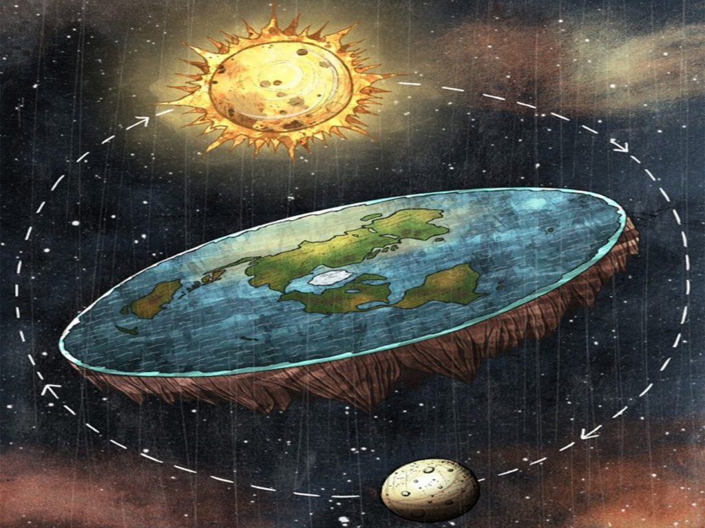

Modern flat Earth hypotheses originated with the English writer Samuel Rowbotham (1816–1884). Based on conclusions derived from the Bedford Level experiment, Rowbotham published a pamphlet Zetetic Astronomy. He later expanded into a book Earth Not a Globe, proposing the Earth is a flat disc centred at the North Pole and bounded along its southern edge by a wall of ice, Antarctica. Rowbotham further held that the Sun and Moon were 3,000 miles (4,800 km) above Earth and that the "cosmos" was 3,100 miles (5,000 km) above the Earth.[2] He also published a leaflet titled The inconsistency of Modern Astronomy and its Opposition to the Scriptures, which argued that the "Bible, alongside our senses, supported the idea that the earth was flat and immovable and this essential truth should not be set aside for a system based solely on human conjecture".[6] Rowbotham and followers like William Carpenter gained attention by successful use of pseudoscience in public debates with leading scientists such as Alfred Russel Wallace.[7][8][9] Rowbotham created a Zetetic Society in England and New York, shipping over a thousand copies of Zetetic Astronomy.[10] After Rowbotham's death, Lady Elizabeth Blount established a Universal Zetetic Society, whose objective was "the propagation of knowledge related to Natural Cosmogony in confirmation of the Holy Scriptures, based on practical scientific investigation". The society published a magazine, The Earth Not a Globe Review, and remained active well into the early 20th century.[11] A flat Earth journal, Earth: a Monthly Magazine of Sense and Science, was published between 1901–1904, edited by Lady Blount.
